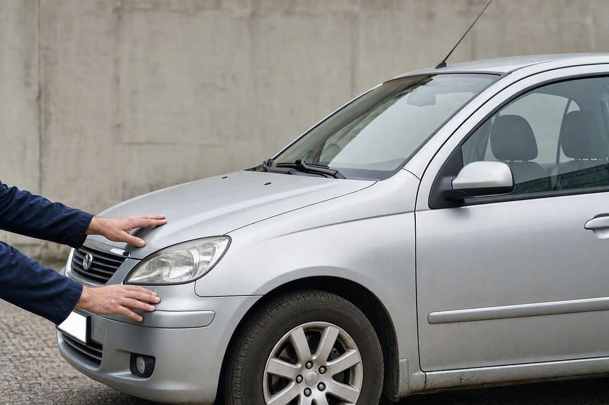
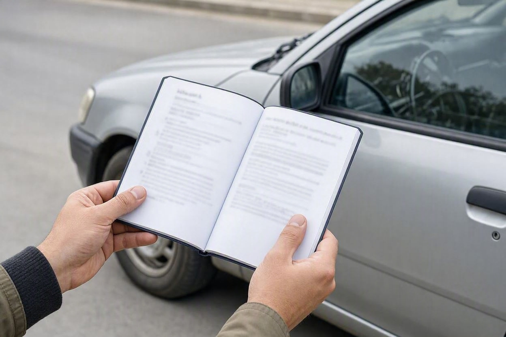
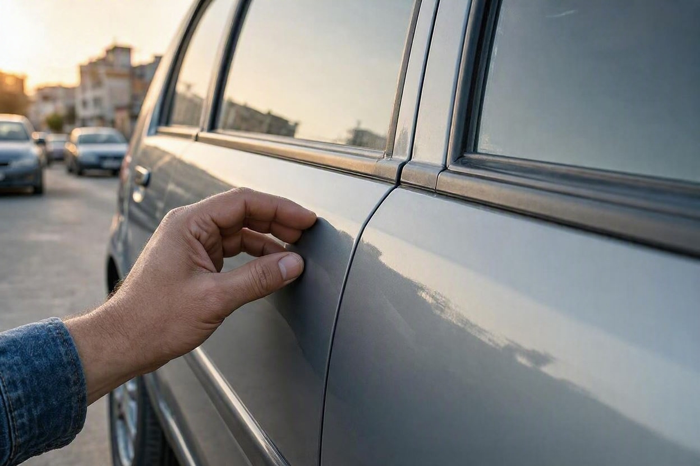
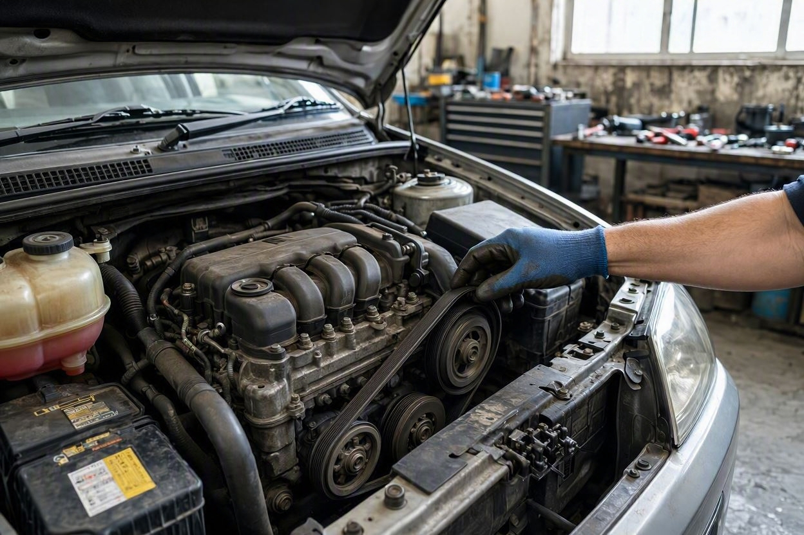
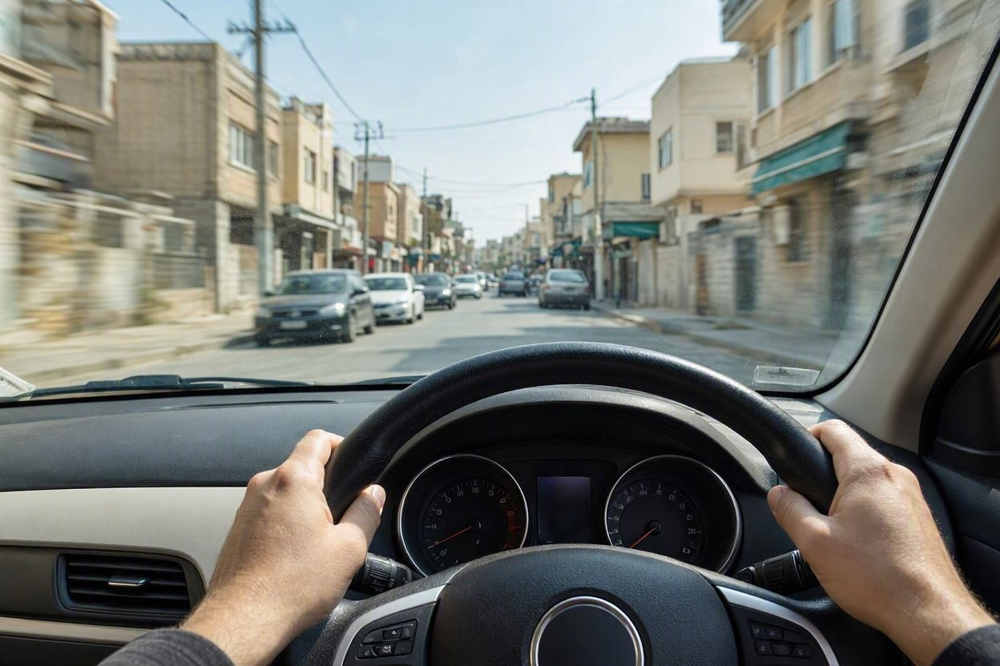

بررسی کامل خودرو قبل از خرید شامل چه مواردی است؟
خیلی از خریدارها فقط به ظاهر و صدای موتور نگاه میکنند و معامله را میبندند. اما یک بررسی کامل، چند حوزه جدا از هم را کنترل میکند که هر کدام میتواند سرنوشت معامله را عوض کند.
وقتی میخواهید یک خودروی دست دوم بخرید، «بررسی کامل» یعنی فقط دیدن موتور یا رنگ نیست. یک بررسی درست، هم اصالت و مدارک، هم بدنه و شاسی، هم وضعیت فنی و هم کارکرد واقعی خودرو را کنار هم میگذارد تا تصویر کامل ماشین روشن شود. اگر میخواهید پیش از پرداخت پول خیالتان راحت باشد، مجموعه کارماچک همه این حوزهها را در یک بررسی منسجم کنترل میکند. در این مقاله میگوییم یک بررسی کامل قبل از خرید دقیقاً شامل چه مواردی است و هر بخش چه چیزی را چک میکند.
بررسی کامل خودرو قبل از خرید شامل شش حوزه اصلی است: مدارک و اصالت، بدنه و رنگ و شاسی، وضعیت فنی (موتور، گیربکس، تعلیق، ترمز و برق)، کارکرد واقعی، تست رانندگی و در نهایت قیمت و افت. هدف، دیدن تصویر کامل خودرو و کاهش ریسک معامله است، نه فقط بررسی یک جنبه.
- بررسی کامل یعنی چند حوزه مستقل، نه فقط موتور یا رنگ.
- مدارک و اصالت، اولین چیزی است که باید تطبیق داده شود.
- بدنه، رنگ و شاسی وضعیت سازه و تاریخچه تصادف را نشان میدهند.
- وضعیت فنی و تست رانندگی، سلامت عملکردی خودرو را میسنجند.
- در پایان، قیمت باید با وضعیت واقعی خودرو هماهنگ باشد.
مدارک و اصالت خودرو
اولین حوزه، بررسی مدارک و اصالت است. حتی سالمترین خودرو هم اگر مشکل هویتی یا مدرکی داشته باشد، معامله را پرریسک میکند. مواردی که در این بخش کنترل میشوند:

- تطبیق سند، کارت و مدارک با مشخصات واقعی خودرو.
- یکسان بودن کد شاسی و شماره موتور در بدنه و مدارک.
- استعلام خلافی، سوابق و وضعیت حقوقی خودرو.
- بررسی نبود مشکلاتی مثل توقیف یا اختلاف هویتی.
کد شاسی نقش کلیدی در این بخش دارد. اگر میخواهید بدانید این کد چطور خوانده و تطبیق داده میشود، تفسیر کامل کد شاسی خودرو این موضوع را باز میکند.
بدنه، رنگ و شاسی
حوزه دوم، سلامت ظاهری و سازهای خودرو است. این بخش نشان میدهد خودرو چه تاریخچهای از تصادف و تعمیر داشته و ارزش واقعی آن چقدر است.

- تشخیص رنگشدگی، صافکاری و ضخامت رنگ قطعات.
- بررسی تقارن بدنه، درزها و لبهها.
- کنترل سلامت شاسی و اتاق و نشانههای ضربه یا جوش.
- بررسی شیشهها، چراغها و قطعات بیرونی.
وضعیت فنی
حوزه سوم، سلامت عملکردی خودرو است. این بخش پرهزینهترین ایرادها را آشکار میکند، چون تعمیر موتور و گیربکس گران است.

- موتور: صدا، نشتی، دود اگزوز و سیستم خنککاری.
- گیربکس و کلاچ: نرمی تعویض دنده و نبود ضربه.
- تعلیق، فرمان و ترمز: لقی، صدا و عملکرد.
- سیستم برق و خطاخوانی با دستگاه دیاگ.
این بخش خودش زیرمجموعههای زیادی دارد. برای آشنایی کاملتر با جزئیات، بخشهای کارشناسی فنی خودرو را بخوانید.
پیش از معامله، خودرو را کامل بررسی کنید
اگر میخواهید همه این حوزهها یکجا و با گزارش روشن بررسی شوند، بررسی تخصصی میتواند ابهامهای معامله را کمتر کند.
شروع کارشناسی خودروکارکرد واقعی و کیلومتر
حوزه چهارم، کارکرد واقعی خودرو است. عدد کیلومترشمار همیشه دقیق نیست و باید با نشانههای فرسایش و مدارک سرویس سنجیده شود.
- مقایسه عدد کیلومترشمار با فرسایش پدال، فرمان و صندلی.
- بررسی برچسب تعویض روغن و دفترچه سرویس.
- کنترل تناسب وضعیت کلی خودرو با کارکرد اعلامی.
عدد پایین کیلومتر روی صفحه بهتنهایی سند نیست. کابینی که مثل خودروی پرکارکرد ساییده شده اما کیلومتر کمی نشان میدهد، یک تناقض جدی است که باید جدی گرفته شود.
تست رانندگی
حوزه پنجم، تست رانندگی است. بعضی ایرادها فقط وقتی خودرو در حرکت و زیر بار است خودشان را نشان میدهند.

- شتابگیری:واکنش موتور و گیربکس هنگام گاز خوردن.
- ترمز:ایستادن مستقیم و بدون لرزش یا صدا.
- پیچ و دستانداز:رفتار تعلیق و فرمان روی ناهمواری.
- سرعت ثابت:لرزش، کشیده شدن به یک سمت یا صدای غیرعادی.
قیمت و افت معامله
حوزه ششم، نتیجه همه بررسیها را به قیمت وصل میکند. یک خودرو ممکن است ایرادهایی داشته باشد، اما اگر قیمتش آن ایرادها را جبران کند، همچنان معامله منطقی باشد.
در این بخش، وضعیت واقعی خودرو در کنار قیمت روز بازار سنجیده میشود تا مشخص شود معامله به نفع شماست یا نه. رنگشدگی، تصادف، کارکرد بالا و ایرادهای فنی هر کدام روی افت قیمت اثر میگذارند و باید در مذاکره لحاظ شوند.
| حوزه | چه چیزی بررسی میشود |
|---|---|
| مدارک و اصالت | سند، کد شاسی، استعلام و وضعیت حقوقی |
| بدنه، رنگ و شاسی | رنگشدگی، صافکاری، تقارن و سلامت شاسی |
| وضعیت فنی | موتور، گیربکس، تعلیق، ترمز و برق |
| کارکرد واقعی | تطبیق کیلومتر با فرسایش و مدارک سرویس |
| تست رانندگی | رفتار واقعی خودرو زیر بار |
| قیمت و افت | تناسب قیمت با وضعیت واقعی خودرو |
کارماچک این حوزهها را چطور بررسی میکند
کارماچک خدمات کارشناسی خودرو را برای بررسی فنی، رنگ، بدنه و عوامل مؤثر بر ارزش معامله ارائه میدهد. فقط ایراد خودرو را شناسایی نمیکنیم؛ اثر آن روی هزینه تعمیر و ارزش واقعی معامله را هم مشخص میکنیم. اگر میخواهید همه این حوزهها یکجا و با گزارش روشن بررسی شوند، میتوانید کارشناسی کامل خودرو پیش از خرید را ثبت کنید.
جمعبندی
بررسی کامل خودرو قبل از خرید یعنی دیدن همه حوزهها کنار هم: مدارک و اصالت، بدنه و رنگ و شاسی، وضعیت فنی، کارکرد واقعی، تست رانندگی و در نهایت قیمت. تمرکز روی فقط یک بخش، شما را نسبت به ریسکهای بخشهای دیگر بیخبر میگذارد. یک بررسی درست، این تصویر کامل را میسازد و کمک میکند با آگاهی و قیمت منطقی معامله کنید، نه با حدس و گمان.
با یک بررسی کامل، مطمئن معامله کنید
پیش از پرداخت پول، همه حوزههای خودرو را با یک بررسی دقیق روشن کنید.
ثبت درخواست کارشناسیسؤالات متداول
بررسی کامل خودرو قبل از خرید چه فرقی با بررسی سطحی دارد؟
بررسی سطحی معمولاً فقط به ظاهر و صدای موتور نگاه میکند. بررسی کامل چند حوزه مستقل شامل مدارک و اصالت، بدنه و شاسی، وضعیت فنی، کارکرد واقعی، تست رانندگی و قیمت را کنار هم میسنجد. همین جامع بودن است که ریسک ایرادهای پنهان را کمتر میکند.
مهمترین حوزه در بررسی کامل کدام است؟
هیچ حوزهای بهتنهایی مهمترین نیست، چون هر کدام ریسک متفاوتی را پوشش میدهند. مدارک و اصالت از مشکل حقوقی جلوگیری میکند، بدنه و شاسی تاریخچه تصادف را نشان میدهد و وضعیت فنی از هزینههای سنگین تعمیر خبر میدهد. تصمیم درست وقتی گرفته میشود که همه کنار هم دیده شوند.
آیا خودم میتوانم بررسی کامل انجام دهم؟
بخشی از بررسی مثل تطبیق مدارک و نگاه اولیه به بدنه با دقت قابل انجام است. اما تشخیص دقیق رنگ، ایراد شاسی، وضعیت فنی و خطاخوانی به ابزار و تجربه کارشناس نیاز دارد. برای معاملههای مهم، تکیه فقط به بررسی شخصی ریسک دارد.
بررسی کامل خودرو چقدر طول میکشد؟
مدت زمان به نوع خودرو و دامنه بررسی بستگی دارد و از خودرویی به خودروی دیگر فرق میکند. یک بررسی کامل شامل چند حوزه است و طبیعتاً از یک نگاه سریع بیشتر طول میکشد. برای زمان دقیق بهتر است با مرکز کارشناسی هماهنگ کنید.
آیا بررسی کامل روی قیمت خرید اثر دارد؟
بله. خروجی یک بررسی کامل فقط لیست ایرادها نیست، بلکه اثر آنها روی ارزش معامله است. با دانستن وضعیت واقعی خودرو میتوانید قیمت را منطقیتر مذاکره کنید و از پرداخت بیش از حد برای خودرویی با ایراد پنهان جلوگیری کنید.
آیا نتیجه بررسی کامل صددرصد قطعی است؟
بررسی کامل ریسک را بهشدت کم میکند، اما تشخیص قطعی همیشه ممکن نیست. بعضی ایرادها فقط در شرایط خاص بروز میکنند. هدف، روشن کردن وضعیت کلی خودرو و کاهش ریسک معامله است، نه صدور تضمین بیخطا.